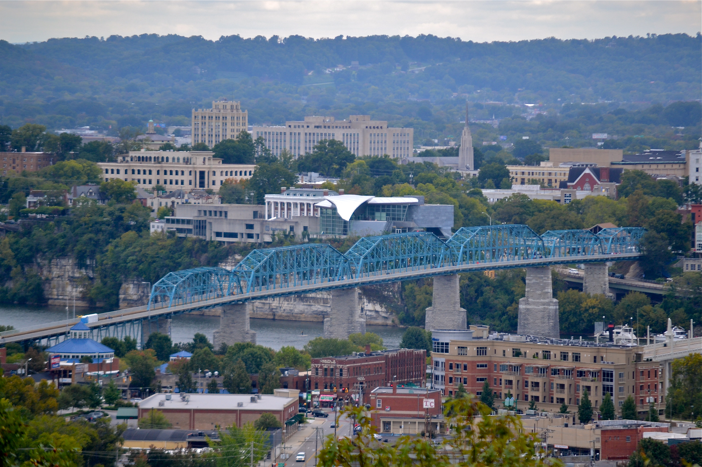

Chattanooga, Tennessee
The Scenic City -- top-ranked for faith, schools, and outdoor living

Key Stats
Overview
Chattanooga sits in a dramatic bend of the Tennessee River, flanked by Lookout Mountain to the south and Signal Mountain to the northwest. The city has undergone one of the most celebrated urban revitalizations in America -- once dubbed "the dirtiest city in the nation" in the 1960s, it transformed itself into a model for livability, earning the #1 Best Place to Live in Tennessee from U.S. News.
For a Reformed Christian family, the draw is unusually strong. The Chattanooga area has an exceptional concentration of PCA churches anchored by Lookout Mountain Presbyterian Church (est. 1892) and Covenant Presbyterian, plus Covenant College perched atop Lookout Mountain. Grace Baptist Academy offers traditional Christian education at $4,000 per year with strong outcomes -- 90-96% college acceptance and SAT averages in the 1080-1300 range.
Tennessee levies no state income tax, and the effective property tax rate in unincorporated Hamilton County sits at just 0.56% (higher within Chattanooga city limits at ~1%). Combined with a cost of living 11% below the national average and median home prices in the low-to-mid $300s, Chattanooga delivers a rare combination: deep Reformed community, outstanding schools, mountain scenery, and genuine affordability.
Scores
Weighted overall: 9.0 -- highest of all cities evaluated
Cost of Living
Score: 10 -- No state income tax and 11.4% below national average
| Metric | Value | Notes |
|---|---|---|
| Overall Index | 88.6 | 11.4% below national average (100) |
| Housing Index | 85 | 15% below national average |
| Grocery Index | 96.5 | Near national average |
| Utilities Index | 86.6 | 13% below national average |
| State Income Tax | 0% | Tennessee levies no income tax |
| Sales Tax | 9.25% | Higher than average (offsets no income tax) |
| Property Tax (Effective) | 0.56% | $2,240 on a $400K home (0.56% applies to unincorporated Hamilton County; ~1% within Chattanooga city limits) |
| Median Household Income | $61,028 | Below national median; remote work can offset |
| Unemployment | 3.2% | Healthy labor market |
| Remote Friendliness | High | EPB gigabit fiber citywide |
Top industries: Healthcare & Insurance, Manufacturing (VW, Wacker), Technology (EPB smart grid), Logistics & Distribution, Tourism & Hospitality
Housing & Land
Score: 8 -- Median $335K with strong acreage options in Sequatchie Valley
Neighborhoods
| Neighborhood | Price Range | Family Rating | Notes |
|---|---|---|---|
| Signal Mountain | $225K-$1M+ | Excellent | #2 family suburb, stunning views, cooler temps, near EPC church |
| Lookout Mountain | $400K-$3M+ | Excellent | #1 family suburb, Covenant College, LMPC nearby |
| East Brainerd | $250K-$600K | Good | Near Grace Academy, newer developments |
| Soddy-Daisy | $200K-$600K | Good | Most affordable for acreage/horse property |
| Sequatchie Valley | $150K-$500K | Good | Best value for 10+ acre ranch, 30-45 min west |
Horse-friendly zoning available. Land availability rated Good.
Education
Score: 9 -- Multiple classical Christian options plus Grace Academy (traditional Christian K-12 at $4K/yr)
Classical Christian Schools
| School | Grades | Tuition | Details |
|---|---|---|---|
| Veritas Classical Schools | K-12 | Hybrid model | 2 days/week on campus, two campuses. Flexible for families supplementing at home. |
| Candies Creek Academy (Charleston, TN) | PK-12 | -- | ACCS member, 78 students, ~30 min from Chattanooga |
| Regents Classical School | -- | -- | Liturgical classical Christian school. Trivium approach (grammar, logic, rhetoric). |
Other Notable Christian Schools
| School | Grades | Tuition | Details |
|---|---|---|---|
| Grace Baptist Academy | K3-12 | $4,000/yr | 536 students, Cognia & ACSI accredited. Traditional Christian curriculum (not classical). SAT avg 1080-1300 range, 90-96% college acceptance. Latin grades 3-8. |
Other Private Schools
| School | Grades | Tuition | Notes |
|---|---|---|---|
| Silverdale Baptist Academy | PreK-12 | $13,010/yr | 1,307 students, well-established |
| Chattanooga Christian School | PreK-12 | $15,800 | 1,550+ students, SACS/Cognia accredited, largest private school in Hamilton County |
| Boyd-Buchanan School | PreK-12 | $10,000+ | Founded 1952, Church of Christ affiliation, 1,000+ students, college-prep |
| Berean Academy | PreK-12 | $5,000 | 400+ students, Hixson. Very affordable. Accepts TN EFS Scholarship. |
Homeschool Co-ops & Communities
| Organization | Type | Notes |
|---|---|---|
| Classical Conversations | Classical Christian | 3 communities: Signal Mountain, East Brainerd, Ooltewah |
| Chattanooga Classical Beginnings | Classical | 1st-12th, Monday through Thursday |
| CSTHEA | Support | Chattanooga SE Home Education Association |
| Nickajack Homeschool Co-op | Co-op | Wednesday mornings, ages 4-12 |
Public school rating: B. Graduation rate: 94%.
Faith Community
Score: 10 -- Exceptional Reformed density with 20+ churches and Covenant College
PCA Churches
| Church | Size | Notes |
|---|---|---|
| Lookout Mountain Presbyterian | 1,000+ members | Historic (1892), major Reformed anchor, adjacent to Covenant College |
| Covenant Presbyterian | ~450 members | Grace-centered, 15+ home groups, strong Westminster commitment |
| Christ the King Presbyterian | ~200 members | Young families, classical ed supporters, homeschool families |
| New City Fellowship | Medium-Large | Cross-cultural PCA, two locations |
| Red Bank Presbyterian | Medium | Reformed theology, Christ-centered |
| Woodlands Gathering (Soddy-Daisy) | Small | PCA mission church |
Other Reformed & Presbyterian Churches
| Church | Denomination | Size | Notes |
|---|---|---|---|
| Signal Mountain Presbyterian | EPC | ~300 members | Established 1981, family-integrated worship |
| Lookout Valley Presbyterian | EPC | -- | EPC church |
| Cornerstone OPC | OPC | Small | Only OPC in Chattanooga region |
| Trinity Reformed Church | CREC | Small (mission) | Family integration in worship |
| Christ Reformed Baptist | Reformed Baptist (1689) | Small | Church plant |
| Grace Reformed Baptist | Reformed Baptist | Medium | Strong Reformed Baptist presence |
Christian organizations: Covenant College (Lookout Mountain, GA), Tennessee Valley Presbytery, Grace Academy parent community.
Lifestyle & Outdoors
Score: 8 -- 50+ trailheads, world-class climbing, and the Tennessee River Blueway
Climate
| Season | High | Low |
|---|---|---|
| Spring | 72F | 49F |
| Summer | 89F | 69F |
| Fall | 72F | 49F |
| Winter | 50F | 31F |
Outdoor Recreation
| Activity | Quality | Details |
|---|---|---|
| Hiking | 5/5 | 50+ trailheads, Cumberland Trail, Lookout Mountain, Prentice Cooper |
| Climbing | 5/5 | Stone Fort world-class bouldering, Tennessee Wall |
| Water Sports | 5/5 | TN River Blueway, Chickamauga Lake, Ocoee Olympic venue |
| Equestrian | 4/5 | Enterprise South 10mi trails, Prentice Cooper, Sequatchie Valley |
| Cycling | 4/5 | TN Riverwalk 13+ miles, Enterprise South MTB |
City-proper crime rates are elevated: 824 violent and 3,955 property crimes per 100K, the highest of any city in this comparison. However, this is a city-proper statistic. Suburban communities like Signal Mountain, Lookout Mountain, and Soddy-Daisy have dramatically lower crime rates and are where most families in the Reformed community live. The lifestyle score remains strong due to the exceptional outdoor recreation, climate, and equestrian access.
Cultural amenities: Tennessee Aquarium, EPB gigabit fiber, Coolidge Park, Lookout Mountain attractions.
Community
Score: 9 -- Signal Mountain and Lookout Mountain ranked #1 and #2 suburbs for families
| Attribute | Rating |
|---|---|
| Family Friendliness | Excellent |
| Homeschool Community | Very Strong |
| Conservative Presence | Very Strong |
| Small Town Feel | Moderate |
Signal Mountain and Lookout Mountain consistently rank as the #1 and #2 suburbs in the Chattanooga metro for families. The homeschool community is very active with multiple co-ops and 3 Classical Conversations communities. Civic engagement is strong and church-driven, with programs like Outdoor Chattanooga providing family-oriented recreation throughout the year.
Christian Community Deep Dive
Inside the Reformed ecosystem: 46 presbytery churches, Covenant College, and the networks that tie it all together
Key Pastors & Churches
| Church | Pastor | Denomination | Size | Notes |
|---|---|---|---|---|
| Lookout Mountain Presbyterian | Rev. Brian Salter | PCA | 1,200-2,000+ | Flagship. Four Sunday services, 35 local ministry partners, deep Covenant College integration |
| First Presbyterian | Dr. Gabriel Fluhrer | PCA | Medium-Large | Historic downtown church. Fluhrer holds a Th.D. from Westminster, published with Reformation Trust |
| New City Fellowship | Rev. Kevin Smith | PCA | Large | Cross-cultural, multi-ethnic. 17 ruling elders. Two locations (main + East Lake satellite) |
| Wayside Presbyterian | Dr. Brian Cosby | PCA | Medium | Signal Mountain. RTS adjunct, Covenant Seminary trustee, hosts annual Reformation Heritage Conference |
| Covenant Presbyterian | Rev. John David Stephenson | PCA | ~450 | East Brainerd. Fresh leadership installed Fall 2025, strong small-group culture |
| Rock Creek Fellowship | Rev. Eric Youngblood | PCA | Small-Medium | Lookout Mountain (GA side). Founding pastor since 2001. Rural, intimate setting |
| Signal Mountain Presbyterian | Rev. Scott Bowen | EPC | ~300 | Multiple pastors, Presbyterian Day School (founded 1996). Broadly evangelical, solidly Presbyterian |
| Cornerstone OPC | Rev. Nick Thompson | OPC | Small | Only OPC in the region. Thompson trained at Puritan Reformed, co-author with Joel Beeke |
| Trinity Reformed Church | -- | CREC | Small | CREC (Doug Wilson-affiliated). Classical education, postmillennial vision |
| Reformed Presbyterian | Rev. Vaughn Hamilton | RPCNA | Small-Medium | Exclusive psalmody (a cappella, psalms only). Hosts Covfamikoi conference at Covenant College |
Additional PCA churches: Hixson Presbyterian (50+ years), Red Bank Presbyterian, St. Elmo Presbyterian (est. 1889), East Ridge Presbyterian, Highland Park Fellowship, Grace+Peace Church (Ooltewah), Mountain Fellowship (Signal Mountain), and others. Two Reformed Baptist congregations also serve the area.
Tennessee Valley Presbytery
The Tennessee Valley Presbytery spans from Chattanooga north through Knoxville, encompassing 46 PCA congregations. In the 20 years prior to 2016, the presbytery had a net growth of just one church. That changed with an ambitious 20-church planting initiative led by Rev. Hutch Garmany, now targeting underserved rural communities and diverse neighborhoods. The presbytery's momentum was validated when it hosted the 52nd PCA General Assembly in Chattanooga in June 2025, bringing thousands of PCA pastors and elders to the city. Funding is distinctive: the majority comes from individual donors rather than denominational assessments.
Covenant College Connection
Covenant College -- the official college of the PCA -- sits atop Lookout Mountain, Georgia, about 15 minutes from downtown Chattanooga. It functions as a flywheel for the entire Reformed ecosystem: professors serve as elders, Sunday school teachers, and small-group leaders in local churches. Students worship alongside them. Alumni settle in the area. The college hosts conferences, lectures, and events that benefit the broader community. CCS offers dual-enrollment classes through Covenant. The RPCNA's annual Covfamikoi family conference is held on the Covenant campus. This self-reinforcing cycle -- Reformed families arrive, join churches, strengthen communities, attract more families -- is why Chattanooga's Reformed density is so unusual for a mid-sized metro.
Christian Networks
Signal Mountain vs. Lookout Mountain
| Factor | Lookout Mountain | Signal Mountain |
|---|---|---|
| Character | Historic, affluent, tight-knit village. Estate-level properties. Higher median home values. | Family-oriented, outdoors-focused. More middle-class diversity. "Small town on a mountain" feel. |
| Population | Smaller, compact summit community | ~8,877 residents, spread across Walden Ridge |
| Home Prices | $400K - $3M+ | $225K - $1M+ |
| Commute to Downtown | Shorter, via St. Elmo | ~8 miles via US 127, avg. 26.6 minutes |
| Key PCA Churches | LMPC (flagship), Rock Creek Fellowship | Wayside Presbyterian (Dr. Cosby), Mountain Fellowship |
| Other Churches | -- | Signal Mountain Presbyterian (EPC, ~300 members) |
| Schools | Lookout Mountain Elementary (public) | Nolan/Thrasher Elementary, SM Middle/High (well-regarded public). SM Christian School, SM Christian Co-op, Presbyterian Day School |
| Covenant College | Located here (GA side). Faculty families throughout. | 15-20 minute drive |
| Key Network | New Canaan Society (Fairyland Club) | F3 (two locations on Signal Mountain) |
| Niche Ranking | #1 best place to raise a family in Chattanooga area | #2 best place to raise a family in Chattanooga area |
| Newcomer Integration | Can feel "insider" initially. Getting to know established families takes intentionality, but welcoming once you engage through church and school networks. | More accessible, less formal social culture. Newcomers integrate faster through schools, church, and outdoor community. |
Bottom line: Choose Lookout Mountain to be at the epicenter of PCA life with proximity to Covenant College and LMPC. Choose Signal Mountain for a broader community feel, excellent public schools, outdoor lifestyle, and deeply faithful Reformed preaching at Wayside. Choose East Brainerd/Ooltewah for newer construction, lower prices, and proximity to Covenant Presbyterian, Grace+Peace, or CCS.
How to Get Involved
Your first months in Chattanooga as a Reformed family:
| Timeline | Step | Details |
|---|---|---|
| Week 1 | 1. Visit your top 2-3 churches | Start with LMPC (Lookout Mountain) or Wayside (Signal Mountain) depending on where you live. First Pres and Covenant Pres are strong alternatives. |
| Week 1 | 2. Show up at F3 | Any weekday at 5:30 AM, 10 locations. Zero cost, zero signup. You will meet 10-20 Christian men on your first morning. |
| Week 1 | 3. Attend New Canaan Society | If on Lookout Mountain: Friday mornings at Fairyland Club, 6:30-8:00 AM. Coffee, fellowship, worship, speaker. |
| Month 1 | 4. Join a small group or Sunday school | Every PCA church has some form of this. This is where real relationships form. LMPC has 15+ home groups; Covenant Pres has similar depth. |
| Month 1 | 5. Explore schools | Tour CCS (1,550+ students), Point Christian Academy (classical), or attend a Veritas/Classical Conversations info session. |
| Month 1 | 6. Connect with CSTHEA | If homeschooling, contact the Chattanooga SE Home Education Association. They are the central hub connecting all co-ops and resources. |
| Month 1 | 7. Attend a mid-week Bible study | First Pres offers 8 women's Bible studies at various times. LMPC, New City, and others have men's and women's options throughout the week. |
| Quarter 1 | 8. Join the church formally | Complete membership classes. LMPC has a visitor/new member track. Most PCA churches run "Discover" or "Explore" classes. |
| Quarter 1 | 9. Register for the Reformation Heritage Conference | Hosted by Wayside each October (2026: Oct 23-25). A community-wide event for Reformed Christians. Email office@waysidechurch.org for the wait list. |
| Quarter 1 | 10. Get kids into co-ops | Register for Classical Conversations, SM Christian Co-op (grades 6-8), or Cornerstone Cooperative ($65/semester per family). The social network for moms forms quickly through these. |
| Ongoing | 11. Serve alongside others | LMPC partners with 35 local ministries. Every church has diaconal, children's, music, and missions opportunities. Serving together builds the deepest relationships. |
| Ongoing | 12. Engage professional networks | CBMC or C12 for business owners. Chattanooga Fellows for college-age children. Covenant College events (lectures, concerts, athletics) are open to the community. |
The mountain communities can feel somewhat insular at first. The key is to pick a church and go deep -- join a small group, serve consistently, and show up. Families who commit report being warmly embraced within a few months. F3, New Canaan, and homeschool co-ops provide relational on-ramps outside of Sunday morning.
Pros and Cons
Advantages
- No state income tax and low effective property tax (0.56%)
- Grace Academy: traditional Christian K-12 at $4K/yr with strong outcomes (90-96% college acceptance)
- Exceptional Reformed church density -- 20+ churches, Covenant College on-site
- Outstanding outdoor recreation: 50+ trailheads, world-class climbing, TN River
- Affordable housing with acreage options (Sequatchie Valley $12-20K/acre)
- EPB gigabit fiber citywide -- excellent for remote work
- Strong, active homeschool community with multiple co-ops
- Mountain scenery with Lookout Mountain and Signal Mountain
- Manageable metro size (437K) with 19-minute average commute
Considerations
- 9.25% sales tax rate (among the highest in the country)
- Humid summers with highs reaching 89F
- Median household income ($61K) below national median
- Walk score of 29 -- car dependent outside downtown core
- Seller's market -- competitive housing in top neighborhoods
- Lookout Mountain homes start at $400K+ (premium for the best suburb)
- City-proper crime rates are high (824 violent, 3,955 property per 100K) -- the highest of any city in this comparison. Suburban communities (Signal Mountain, Lookout Mountain, Soddy-Daisy) are significantly safer.
- 51 inches of annual rainfall -- significantly wetter than western cities